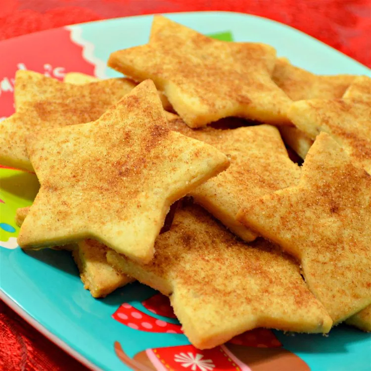

Biscochitos Traditional Cookies
Biscochitos are a traditional New Mexico Christmas cookie flavored with anise and brandy. They are usually made in the fleur-de-lis shape but use your favorite cookie cutters if you like.

Ingredients
- 6 cups all-purpose flour
- 1 tablespoon baking powder
- 1/4 teaspoon salt
- 2 cups lard, softened
- 1 1/2 cups white sugar
- 2 teaspoons anise seed
- 2 eggs
- 1/4 cup brandy
- 1/4 cup white sugar
- 1 tablespoon ground cinnamon
Directions
- Preheat the oven to 350 degrees F (175 degrees C). Sift flour, baking powder, and salt into a bowl; set aside.
- Beat lard and 1 1/2 cups sugar together in a large bowl with an electric mixer until smooth. Add anise seed and beat until fluffy. Stir in eggs, one at a time. Add brandy; stir in flour mixture to form a dough.
- Roll dough with a floured rolling pin to a thickness of 1/4 or 1/2 inch. Cut dough with a fleur-de-lis cookie cutter, or other simple shape. Place cookies onto ungreased baking sheets. Mix 1/4 cup of sugar and cinnamon together in a small bowl; sprinkle over cookies.
- Bake in the preheated oven until the edges are golden brown, about 10 minutes.
Nutrition Facts
Per serving:
calories; 6g fat; 13g carbs; 1g protein.